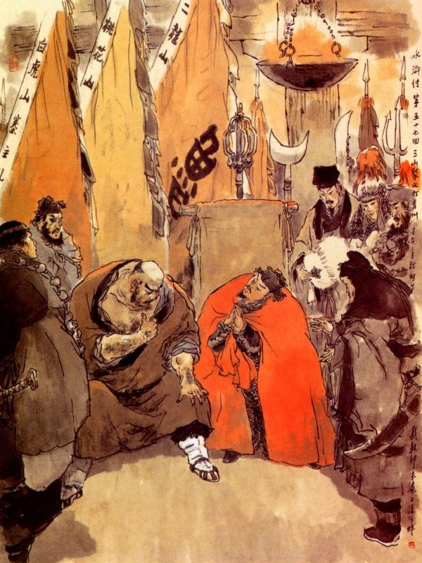
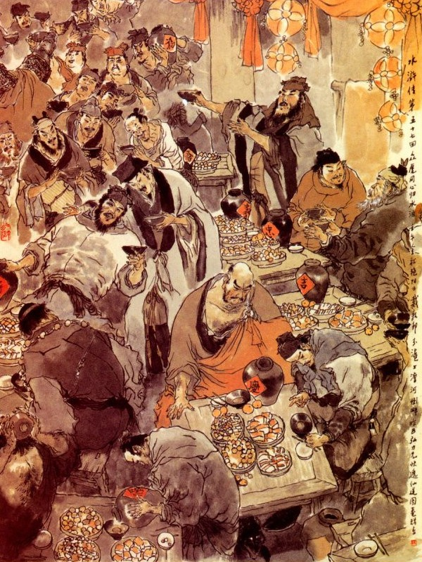

Khi đó Dương Chí nói với mọi người rằng:
- Xưa nay tôi vẫn nghe tiếng Tống Công Minh ở nơi Sơn Bạc là một người anh hùng đại lượng, đã thường nổi tiếng trong đám giang hồ, vả chăng Hô Diên Chước lại là cừu nhân của Lương Sơn Bạc, vậy anh ta muốn đánh phủ Thanh Châu thì trước hết phải mời Tống Công Minh cùng đến họp quân với anh em ta đây và hợp cả hảo hán ở Đào Hoa Sơn, để cất binh ra đánh thì mới có cơ tất thắng mà cứu người ra được. Việc đó chẳng hay các ngài nghĩ sao?
Lỗ Trí Thâm nói:
- Phải, tôi cũng thường nghe Tống Tam Lang là người tốt mà chưa được gặp bao giờ? Ngày trước ông ta ở núi Thanh Long với Hoa Tri Trại, tôi đã toan đến đó cho gặp một lần. Dè đâu khi cất chân ra đi thì ông ta đã cất chân đi rồi, thế mà không được gặp, thực là vô duyên quá; phải, nay nếu Khổng Lượng muốn cứu anh em ra, tất phải thân hành lên mời ông ta để mặc chúng tôi ở đây, chống cự với đám Thanh Châu cũng được.
Khổng Lượng nghe nói lấy làm phải, liền giao đám tiểu lâu la cho Lỗ Trí Thâm rồi dẫn một người bạn, dáng ăn mặc giả làm khách buôn mà lập tức lên Lương Sơn Bạc. Khi Khổng Lượng đi rồi, Lỗ Trí Thâm cùng Dương Chí, Võ Tòng trở về sơn trại, gọi Tào Chính, Thi Ân, dẫn mấy trăm tiểu lâu la đi đánh Thanh Châu và báo cho Lý Trung, Chu Thông cùng đem quân đến Thanh Châu để đánh.
Bên kia Khổng Lượng đi gần tới Lương Sơn Bạc, lần vào hàng cơm của Thôi Mạnh Phán Quan, để lần hỏi thăm đường lên núi, Lý Lập thấy hai người lạ mặt đến hỏi, liền mời ngồi trong hàng rồi hỏi rằng:
- Các ngài ở đâu đến đây?
Khổng Lượng đáp:
- Chúng tôi ở Thanh Châu đến.
- Các ngài định lên Lương Sơn Bạc tìm ai?
- Tôi có một người quen ở đó, muốn tìm đến chơi.
- Trong trại toàn thị các Đại Vương ở đó, ông lên thế nào được mà hỏi thăm?
- Vâng! Tôi định đến tìm Tống Đại Vương đây.
- Có phải vậy thì xin cứ ngồi đây rồi tôi sẽ bảo.
Nói đoạn liền sai đem rượu tiếp phong mời Khổng Lượng uống.
Khổng Lượng thấy vậy liền hỏi:
- Chúng tôi không được quen biết bao giờ, sao ngài lại cho uống rượu làm vậy?
Lý Lập nói:
- Nguyên ngài không biết, sơn trại tôi mở mấy ngôi hàng đây là cốt để dò thăm tin tức bên ngoài và đón những người cố cựu và những người hảo hán, đến nhập bọn ở trong sơn trại. Vậy xin ngài ngồi đợi chơi đây, tôi xin báo cho Tống Công Minh lập tức.
Khổng Lượng nói:
- Thưa ngài chúng tôi tên là Khổng Lượng ở núi Bạch Hổ đến đây, xin ngài báo giúp cho.
Lý Lập nghe nói đáp rằng:
- Trước đây tôi thường nghe thấy Tống Công Minh nói đến tên ngài, nay được ngài đến đây thật là hân hạnh.
Nói đoạn liền đến Thủy Đình, bắn một mũi tên ra hiệu rồi thấy trong đám lau lách bên kia có tên tiểu lâu la chở thuyền sang đón. Lý Lập mời Khổng Lượng xuống thuyền cùng nhau vào bến Kim Sa rồi đưa lên sơn trại.
Khổng Lượng đi đến Tam Quan, thấy cửa quan hùng tráng, gươm giáo thành rừng, trong bụng nghĩ thầm: "Xưa nay chỉ nghe tiếng Lương Sơn Bạc thịnh vượng, nay ta không ngờ quả nhiên lập nên cơ đồ lớn lao như vậy!”
Bấy giờ Tống Giang nghe báo, liền chạy ra đón Khổng Lượng. Khổng Lượng trông thấy Tống Giang vội vàng cúi lạy, thăm hỏi ân cần.
Tống Giang hỏi Khổng Lượng rằng:
- Chẳng hay hiền đệ có chuyện chi mà đến đây? Khổng Lượng nghe nói, liền cất tiếng khóc oà lên. Tống Giang thấy vậy vội hỏi:
- Hiền đệ đến đây có việc chi? Cứ nói chuyện cho ta biết ta xin hết sức giúp cho ngay.
Khổng Lượng sụt sùi khóc rằng:
- Từ khi bái biệt sư phụ, được ít lâu thì phụ thân tôi mất, sau anh chúng tôi là Khổng Minh, nhân tức nhau với một người phú hộ ở trong làng, liền đem giết chết hết một nhà hắn ta rồi bị Quan Tư tróc nã, đành phải chiếm núi Bạch Hổ tụ năm bảy trăm lâu la để làm nghề lạc thảo với nhau. Sau đó nhân có một người chú là Khổng Tân, bị quan phủ Thanh Châu bắt giam trong ngục, anh em chúng tôi bèn đem binh tiến đánh Thanh Châu, định để cứu cho chú ra. Dè đâu vừa khi đến thành, gặp ngay một tên tặc tướng là Hô Diên Chước, anh tôi đánh nhau với hắn được có mấy hiệp thì bị bắt ngay, hiện giải vào phủ Thanh Châu, không biết có còn sống được hay không: Còn tôi hôm đó cũng bị Hô Diên Chước đánh đuổi một phen rồi ngày hôm sau mới gặp được Võ Tòng dẫn đến chào mấy người anh em bạn: Một người là Hoa Hoà Thượng Lỗ Trí Thâm, và một người là Thanh Diện Thú Dương Chí, mấy người đó mới gặp chúng tôi, cũng đã tỏ lòng thân ái, bèn hẹn đem cả lâu la ở núi Nhị Long và rủ Lý Trung, Chu Thông ở núi Đào Hoa, cùng sang đánh giúp rồi bảo chúng tôi phải sang đây lập tức cầu cứu với sư phụ thì mới có thể thoát nạn cho chú và anh tôi được.
Tống Giang nghe nói cười mà đáp rằng:
- Việc đó khó chi? Hiền đệ cứ vững tâm vào chơi sơn trại đã.
Nói đoạn dẫn Khổng Lượng vào chào Tiều Cái. Ngô Dụng, Tôn Công Thắng, cùng các vị Đầu Lĩnh rồi đem chuyện Hô Diên Chước, cùng tình thế Khổng Lượng thuật cho mọi người nghe.
Tiều Cái bảo với Tống Giang rằng:
- Hiền đệ với Khổng Huynh là chỗ chi thân khi trước, vả chăng các vị hào kiệt kia đã có lòng vị nghĩa giang hồ như vậy thì lẽ nào ta không đi cứu cho đành? Song lâu nay hiền đệ khó nhọc đã nhiều, vậy nay hiền đệ hãy coi giữ chủ quyền sơn trại, để ngu huynh đi một phen mới được.
Tống Giang lại nói:
- Ca Ca là ông chủ sơn trại, không thể một ngày rời bỏ ngay được. Vả chăng việc này là của tôi, người ta xa muôn dặm tới đây nếu tôi không đi thì sao cho người ta an tâm, Vậy xin Ca Ca để mặc cho tiểu đệ cùng mấy anh em đi cho được việc.
Vừa nói dứt lời thì thấy các Đầu Lĩnh đồng thanh lên nói rằng:
- Chúng tôi xin theo Tống Ca Ca để ra sức phen này.
Tống Giang nghe nói cả mừng, liền đặt tiệc để thiết đãi Khổng Lượng. Khi chè chén xong, Tống Giang gọi Thiết Diện Tổng Mục Bùi Tuyên, cắt đặt nhân mã đi đánh, chia làm năm đội: Tiền Quân có Hoa Vinh, Tần Minh, Yến Thuận, Vương Nụy Hổ mở đường làm tiên phong; đội thứ nhì, Mục Hoằng, Dương Hùng, Giải Trân, Giải Bảo làm đầu. Trung quân thì có chủ soái Tống Giang, Ngô Dụng, Lã Phương, Quách Thịnh; Đội thứ tư thì có Chu Đồng, Sài Tiến, Lý Tuấn, Trương Hoàng; còn hậu quân thì Tôn Lập Dương Lâm, Âu Bằng và Lăng Chấn dẫn quân đi sau.
Năm quân chỉnh điểm xong rồi, tất cả cộng hai mươi Đầu Lĩnh, ba nghìn quân mã, cùng nhau từ giã Tiều Cái, cùng các Đầu Lĩnh coi trại rồi đi theo Khổng Lượng, kéo quân thẳng tới Thanh Châu. Khi qua các phủ huyện, không tơ hào phạm của dân, ai ai cũng một lòng kính phục. Cách mấy hôm đến đất Thanh Châu, Khổng Lượng vào trại quân, báo cho Lỗ Trí Thâm biết, Lỗ Trí Thâm nghe báo, liền cùng các vị hảo hán sửa soạn để nghinh đón Tống Giang.
Tống Giang tới nơi, Võ Tòng dẫn Lỗ Trí Thâm, Dương Chí, Lý Trung, Chu Thông cùng Tào Chính, Thi Ân ra đón chào. Tống Giang vào đến sơn trại, nhường chỗ mời Lỗ Trí Thâm ngồi.

Lỗ Trí Thâm nói:
- Tôi được nghe đại danh Ca Ca đã lâu mà chưa được tiếp, nay lại được gặp ở đây, thực là may quá.
Tống Giang khiêm tốn mà rằng:
- Chúng tôi đã thấm vào đâu! Xưa nay vẫn thấy trong đám giang hồ ngợi khen thánh đức của ngài, ngày nay được trông thấy được mặt từ bi, thực lấy làm hân hạnh vô cùng.
Dương Chí đứng lên vái chào Tống Giang mà nói rằng:
- Ngày trước chúng tôi đi Lương Sơn, các vị hảo hán đã có lòng tốt lưu lại ở đó, song vì chúng tôi tôi khờ dại không chịu ở lại.
Nay được có nghĩa sĩ ở đó, làm vẻ vang cho sơn trại, chúng tôi nghe nói, trong lòng lấy làm vui vẻ bội phần.
Tống Giang cười đáp rằng:
- Uy danh của Chế Sứ, thiên hạ ai không biết, tiếc cho Tống Giang được gặp quá muộn mà thôi!
Đoạn rồi Lỗ Trí Thâm sai người làm rượu khoãn đãi Tống Giang, cùng các vị Đầu Lĩnh, rất là vui thoả. Hôm sau đó, Tống Giang hỏi đến tình thế Thanh Châu.
Dương Chí đáp rằng:
- Từ khi Khổng Lượng đi rồi, anh em chúng tôi đã ba dạo đánh nhau chưa quyết được thua. Hiện nay cả thành Thanh Châu, chỉ trông cậy vào một mình Hô Diên Chước, nếu bắt được người ấy thì Thanh Châu phá dễ như chơi, không có điều gì là trở ngại.
Ngô Dụng cười rằng:
- Người ấy chỉ có thể lấy mẹo bắt, chứ không lấy sức địch.
Tống Giang hỏi:
- Quân Sư có kế gì khả dĩ bắt được?
Ngô Dụng đáp rằng:
- Chỉ thế này, thế này, là có thể bắt được ngay.
Tống Giang nghe nói cả mừng khen là diệu kế rồi cung nhau phân phát nhân mã để hôm sau ra trận. Sáng hôm sau các vị hảo hán kéo quân vây bốn mặt thành Thanh Châu, rồi đánh trống khua cờ, hò reo khơi đánh. Quan Phủ Mộ Dung trong thành thấy vậy, liền mời Hô Diên Chước ra bàn rằng:
- Ngày nay lại thêm giặc đằng Lương Sơn kéo đến đánh thành, như vậy ta có cách gì mà đối phó lại được?
Hô Diên Chước nói:
- Xin Ân Tướng cứ vững tâm phen này quân giặc đến đây, đã là thất sách, vì xưa nay chỉ quen vẫy vùng trong bến nước, nay bỗng lại rời xa sào huyệt mà ra tới đây thì có tên nào là ta tróc tên ấy, không còn ngại điều chi nữa? Xin ân tướng lên thành, xem tôi bắt giặc phen này mới được.
Nói đoạn liền tề chỉnh mũ giáp, nhảy lên mình ngựa, mở cửa thành, hạ đích kiều, dẫn một nghìn mã kéo ra. Bấy giờ bên trận Tống Giang có một tướng cưỡi ngựa, tay cầm lang Nha Côn, quát mắng Tri Phủ rằng:
- Quân cướp này, giống mọt dân kia, bay nỡ lòng giết cả vợ con ta, nay ta quyết báo thù, không thể nào tha cho ngươi được.
Mộ Dung Tri Phủ trông ra nhận biết là Tần Minh, liền mắng lại rằng:
- Bây là một ông quan của triều đình, nhà nước đã phụ bạc điều chi mà bay dám nỡ lòng đành phản? Nếu bắt được ngươi thì xé thây ra làm một vạn mảnh mới cam. Thôi Tướng Quân đâu? Hãy bắt thằng giặc ấy trước đã.
Hô Diên Chước nghe nói, lập tức múa song chiên xông ngựa ra đánh Tần Minh, Tần Minh giơ Lang Nha Côn ra đánh với Hô Diên Chước. Đôi bên cùng gặp tay đối thủ, đánh nhau hơn bốn năm mươi hiệp, không quyết được thua. Mộ Dung Tri Phủ thấy đánh nhau lâu, sợ khi Hô Diên Chước bị thua, liền khua chiên thu quân vào thành, Tần Minh cũng lui về bản trận không theo đuổi. Tống Giang liền hạ lệnh, lui xa ra ngoài mười lăm dặm hạ trại.
Bấy giờ Hô Diên Chước vào trong thành, xuống ngựa nói với Tri Phủ Mộ Dung rằng:
- Hồi đó tôi đương định bắt Tần Minh, sao Ân tướng lại vội thu quân như vậy?
Tri Phủ nói:
- Tôi thấy Tướng Quân đánh nhau, sợ khi đuối sức nên phải thu quân để nghỉ, tên Tần Minh trước làm Thống Chế ở đây, sau mới cùng Hoa Vinh làm phản mà theo bọn Lương Sơn. Hắn ta võ nghệ cũng khá, chớ nên coi thường mới được.
- Ân Tướng không ngại, tôi xin bắt được loại phản tặc hầu ngài. Vừa rồi mới đấu nhau một lúc mà tay công anh ta đã rối loạn rồi, ngày mai thế nào tôi cũng chém được hắn.
- Nếu Tướng Quân có thủ đoạn anh hùng như vậy, ngày mai xin đánh tháo vòng vây, dọn cho ba người ra, một người cho vào Đông Kinh cầu cứu và hai người đến các Châu Phủ gần đây, để nhờ binh ứng viện một thể.
Hô Diên Chước vâng lời mà rằng:
- Tướng công nghĩ như vậy thực là chu đáo lắm.
Tri Phủ nghe nói, liền viết mấy văn thư cầu cứu, giao cho ba tên lính cẩn thận để sáng hôm sau mang đi.
Hôm đó Hô Diên Chước trở về phòng nghỉ, mãi đến đầu trống canh năm tỉnh dậy. Chợt thấy quân sĩ vào báo rằng:
- Trên núi đất về góc thành bên Bắc có ba người cưỡi ba con ngựa, đến nom dòm vào thành, một người mặc áo bào đỏ cưỡi ngựa trắng đi giữa và hai người đi kèm hai bên, hình như là Tiểu Lý Quảng Hoa Vinh, cùng một người ăn mặc lối thầy tu thì phải.
Hô Diên Chước nói:
- Nếu vậy thì anh mặc áo bào đỏ đích xác là Tống Giang, còn anh an mặc thầy tu, chắc là Ngô Dụng hẳn? Chúng bay cứ im lặng, chớ nên làm động. mau điểm một trăm nhân mã, để ta bắt ba thằng ấy mới được.
Nói đoạn vội vàng đội mũ mặc giáp, cầm chiên lên ngựa, dẫn hơn ba trăm quân kỵ, lẻn ra mở cửa Bắc môn, bỏ đích kiều xuống, dẫn quân ra ngọn núi đất. Khi ra tới nơi, thấy ba người vẫn điềm nhiên kìm cương ngựa đứng nom vào thành. Hô Diên Chước liền xốc ngựa lên đến núi, bấy giờ ba người kia mới quay ngựa lững thững chạy đi. Hô Diên Chước thấy vậy bèn ra roi té ngựa để đuổi theo.
Ba người kia chạy đến một chỗ trước mặt có mấy cây khô rồi đứng dừng lại cả, Hô Diên Chước lại sấn ngựa mà đuổi theo lên.
Khi gần đền chỗ cây khô, thấy có tiếng hò reo ầm ĩ rồi Hô Diên Chước bị cả người lẫn ngựa đều tuột xuống hố đất. Đoạn rồi hai bên có năm sáu mưới tên quân nấp, đem dây móc ra trói Hô Diên Chước về trước và dắt con ngựa về sau.
Bọn quân sĩ Hô Diên Chước thấy vậy, toan xông đến đánh, bất ngờ bị Hoa Vinh bắn ngã dăm bảy quân kỵ đi đầu, còn thì tháo chạy hết cả.
Bấy giờ Tống Giang trở về trại quân, truyền bọn đao phủ dong Hô Diên Chước lên trước trướng. Hô Diên Chước lên tới nơi, Tống Giang vội quát quân sĩ cởi trói ra rồi thân hành xuống ngựa dắt Hô Diên Chước lên ngồi và lạy chào rất là cung kính.
Hô Diên Chước lấy làm ngạc nhiên hỏi:
- Vì duyên cớ làm sao?
Tống Giang đáp rằng:
- Tống Giang tôi có khi nào phản bội triều đình, ngày nay chẳng qua vì quan tham lại nhũng ức hiếp quá tình, nên phải tạm lánh vào nơi Thủy Bạc, để chờ khi nào triều đình tha tội rồi lại cùng nhau quy phục đó thôi. Nay Tướng Quân tới đây, chúng tôi lấy làm hâm mộ vô cùng, nên mới cả gan trộm phép Tướng Quân mà mời đón đến đây, như thế thật là đại tội, dám xin Tướng Quân đại xá đi cho.
- Tôi là một người bị bắt, có chi mà nghĩa sĩ nói những lời khiêm tốn như vậy?
- Chúng tôi đây có khi nào khi dễ Tướng Quân, lòng này thực đó Hoàng Thiên soi xét nay chỉ xin Tướng Quân rộng cho một điều mà thôi.
- Chẳng hay Huynh trưởng muốn Hô Diên Chước về triều đình xin giấy chiêu an, để đem đến sơn trại mà tha cho tất cả mọi người đó chăng?
- Chết nổi! Việc ấy Tướng Quân làm sao nổi? Cao Thái Úy là một kẻ tâm địa hẹp hòi, hay quên ơn lớn và hay nhớ lỗi nhỏ của người. Nay Tướng Quân đã làm hao tổn biết bao binh mã lương thực, vậy có khi nào Cao Thái Úy lại không gia tội cho ngài. Vả chăng Hàn Thao, Bành Dĩ, Lăng Chấn, đều đã nhất tâm đến ở trại tôi, nay nếu Tướng Quân có lòng hạ cố mà cho chúng tôi được cùng sum họp thì Tống Giang này xin nhường ngôi để kính Tướng Quân rồi đợi khi triều đình có lệnh chiêu an, thí ta sẽ cùng nhau giúp nước. Chẳng Tướng Quân nghĩ sao?
Hô Diên Chước ngẫm nghĩ hồi lâu, nghe cũng hơi có lý, bèn thở dài một tiếng rồi quỳ xuống đất nói rằng:
- Việc này không phải là Hô Diên Chước bất trung với nước, song tấc lòng rất cảm nghĩa khí của Huynh trưởng, không lẽ nào từ chối cho đành. Vậy từ nay xin theo hầu dưới trướng, không thay đổi tấc lòng.
Tống Giang nghe nói cả mừng, liền mời các vị Đầu Lĩnh ra chào Hô Diên Chước suốt lượt rồi gọi Lý Trung, Chu Thông đem ngựa Tích Tuyết Ô Truy trả lại cho Hô Diên Chước. Đoạn rồi cùng nhau bàn kế để cứu Khổng Minh.
Ngô Dụng nói:
- Bây giờ chỉ nhờ Hô Tướng Quân lừa mở cổng thành thì mới dễ được thành công, mới có thể ngăn hết đường về của Hô Tướng Quân sau này được.
Tống Giang hiểu ý, liền ủy uyển nói với Hô Diên Chước rằng:
- Dám thưa Tướng Quân: Việc này không phải Tống Giang tôi có tham muốn thành trì, dấy binh sinh sự, đó chẳng qua vì chú cháu Khổng Minh bị giam trong ngục, nên tôi lôi thôi động dạng đến đây. Vậy nay Tướng Quân không rộng lòng vì nghĩa mà lừa mở cửa thành thì không khi nào xong được.
Hô Diên Chước vâng lời mà rằng:
- Huynh trưởng đã có lòng sai khiến thì dẫu thế nào, tôi cũng không dám từ nan, chỉ chiều hôm nay làm ngay lập tức là xong.
Tống Giang cả mừng, liền sai Tần Minh, Hoa Vinh, Tôn Lập, Yến Thuận, Lã Phương, Quách Thịnh, Giải Trân, Giải Bảo, Âu Bằng, Vương Anh, tất cả mười vị Đầu Lĩnh ăn mặc ra lối quân, cưỡi mười con ngựa theo Hô Diên Chước ra đi.
Khi về tới cửa Thành, Hô Diên Chước vội vội vàng vàng nói là trốn thoát được về, liền gọi người ra mở cổng. Người trong thành nghe rõ tiếng Hô Diên Chước liền quay vào báo cho Tri Phủ Mộ Dung biết.
Bấy giờ Tri Phủ đương lo phiền vì nổi Hô Diên Chước bị bắt, bỗng thấy nói Hô Diên Chước lại trốn thoát về, trong bụng lấy làm mừng bội phần, vội cưỡi ngựa chạy lên mặt thành để hỏi. Khi lên mặt thành tuy không nom rõ mặt Hô Diên Chước, song nghe tiếng quả thị là Hô Diên Chước và chỉ có mười tên quân kỵ đi theo, liền hỏi lên rằng:
- Tướng Quân làm cách gì mà về được đó?
Hô Diên Chước nói:
- Tôi vì sa xuống hố, bị chúng bắt trói mang về ở trại, sau may có mấy tên Đầu Mục nguyên theo tôi trước, ăn trộm con ngựa này cho tôi cưỡi mà đưa về đây.
Tri Phủ nghe nói liền sai quân sĩ mở cổng Thành, hạ đích kiều cho mọi người vào. Khi vào tới cửa thành, Tần Minh bắt luôn Tri Phủ Mộ Dung, liền đánh cho một gậy ngã lăn xuống ngựa, Giải Trân liền phóng lửa đốt thành rồi Âu Bằng, Vương Nụy Hổ trèo lên mặt thành mà giết tan bọn quân sĩ coi thành.
Tống Giang ở ngoài thấy trong Thành nổi lửa, liền kéo đại đội quân mã vào thành, truyền lệnh quân chúng không được quấy nhiễu lương dân, thu hết tiền nong kho đụn và phá ngục cứu Khổng Minh cùng cả nhà Khổng Tân ra. Đoạn rồi cứu tắt ngọn lửa trong thành, bắt giết hết người nhà Tri Phủ Mộ Dung và thu hết của cải gia tư để thưởng cho quân sĩ.
Sáng hôm sau tìm những nhà lương dân nào bị cháy, cấp cho thóc gạo tiền nong rồi đem kim ngân lương thực của các kho, xếp vào năm sáu trăm xe và bắt lấy hơn hai trăm ngựa tốt. Đoạn rồi làm tiệc ăn mừng ở trong phủ Thanh Châu và mời các vị Đầu Lĩnh mới cùng về sơn trại. Lý Trung, chu Thông sai người về núi Đào Hoa lấy hết nhân mã, tiền lương đốt bỏ sơn trại để đi. Lỗ Trí Thâm cũng sai Tào Chính, Thi Ân về núi Nhị Long cùng với Tôn Nhị Nương thu hết nhân mã tiền lương mà đốt bỏ chùa Bảo Châu cùng sơn trại để theo Tống Giang về Sơn Bạc.
Cách vài hôm sau, nhân mã các nơi đều đến đủ. Tống Giang liền kéo thẳng nhân mã đại hội trở về Lương Sơn Bạc. Khi ra đi Tống Giang sai Hoa Vinh, Tần Minh, Chu Đồng và Hô Diên Chước, dẫn đường đi trước, qua các phủ, huyện, không hề xâm phạm của ai. Dân gian thấy vậy đều dắt già cõng trẻ cùng nhau đón rước vui mừng, rất chiều trân trọng.
Đường đi mấy hôm về tới Lương Sơn Bạc, các vị Thủy Quân Đầu Lĩnh, đều sắp đủ thuyền bè để đón, Tiều Cái dẫn các vị Đầu Lĩnh trên núi xuống bến Kim Sa, đón tiếp nhân mã vào trong đại trại.
Khi về tới Tụ Nghĩa Sảnh, các vị Đầu Lĩnh chia thứ tự cùng ngồi rồi mở tiệc khao mừng mấy vị Đầu Lĩnh mới đến là: Hô Diên Chước, Lỗ Trí Thâm, Dương Chí, Võ Tòng, Thi Ân, Tào Chính, Trương Thanh, Tôn Nhị Nương, Lý Trung, Chu Thông, Khổng Minh, Khổng Lượng, cộng tất cả mười hai người.
Trong khi đó Lâm Xung có ý khẩn khoản mời Lỗ Trí Thâm và tạ ơn Lỗ Trí Thâm đã cứu giúp mình từ trước.
Lỗ Trí Thâm hỏi thăm Lâm Xung rằng:
- Từ khi tôi xa cách giáo đầu đến nay, không được tin tức gì cả, chẳng hay quý phu nhân dạo này ra sao?
- Lâm Xung nói:
- Sau khi tôi giết Vương Luân rồi có cho người về đón vợ con, song chẳng may nhà tôi bị thằng ăn mày nhà Cao Cầu nó bức bách, đến nổi tự tử mà chết rồi sau ông nhạc nhà tôi cũng bị bệnh chết nốt.
Dương Chí cũng thuật chuyện gặp Vương Luân trước cho mọi người nghe, chúng đều cười mà nói rằng:
- Mới hay muôn việc tại trời định trước, không có việc gì ngẫu nhiên hết thảy.
Tiều Cái lại thuật chuyện cướp của Sinh Thần ở Hoàng Nê Cương khi trước, chúng đều vui mừng mà tán tụng không thôi. Đến ngày hôm sau các vị Đầu Lĩnh lần lượt chè chén vui mừng, trong sơn trại rất sầm uất.
Bấy giờ Tống Giang thấy sơn trại thu được nhiều nhân mã trong lòng rất là vui mừng, liền cho Thang Long tổng quản thợ rèn, rèn đánh các thứ gươm khí, cùng các áo giáp và các thứ Liên Hoàn; Hầu Kiện tổng quản các kho cờ, quạt, áo xiêm, chế thêm cờ Tam Tài, Cửu Riệu, Tứ Đẩu, Ngũ Phương, Nhị Thập Bát Tú, Phi Long, Phi Hổ, Phi Hùng, Phi Báo, cùng các thứ búa vàng, cờ mao trắng, vải mũ đỏ, lộng đen để dùng. Bốn chung quang đặt thêm pháo đài và mở thêm hai ngôi tửu điếm ở hai bên đường Tây Nam để đón hảo hán bốn phương, và dò xét quân tình ở ngoài. Tửu điếm con đường bên Tây thì hai vợ chồng Trương Thanh, Tôn Nhị Nương coi giữ; Tửu điếm bêm Nam thì để vợ chồng Tân Tân, Cố Đại Tẩu trông coi; Tửu điếm bên Đông có Chu Quý, Nhạc Hoà và tửu điếm bên Bắc có Lý Lập, Thời Thiên, trên ba cửa quan đặt thêm mấy trạm, cắt các Đầu Lĩnh ra coi giử luân lưu. Khi cắt đặt xong rồi, các Đầu Lĩnh đều vâng theo Tướng Lệnh mà ai vào việc ấy.

Một hôm Hoa Hoà Thượng Lỗ Trí Thâm nói với Tống Giang rằng:
- Trí Thâm tôi có một người quen cũ, tên gọi là Cửu Văn Long Sử Tiến là đồ đệ Lý Trung khi trước, hiện nay ở núi Thiếu Hoa, huyện Hoa Âm về Hoa Châu và có ba người nữa là là Thần Cơ Quân Sư Chu Võ, Khiêu Giản Hổ Trần Đạt, Bạch Hoa Xà Dương Xuân, cùng tụ nghĩa ở đó với nhau. Tôi từ khi ở chùa Ngoả Quan tương biệt tới nay, trong lòng vẫn thường bâng khuâng nhung nhớ mà không được gặp bao giờ. Vậy ngày nay tôi xin qua đó thăm chơi và rủ cả bốn người về đây nhập đảng một thể, chẳng hay tôn ý nghĩ sao:
- Tôi cũng thường nghe Sử Tiến xưa nay, nay nếu Ngô Sư có lòng tốt mà mời cả về đây thì còn gì hơn nữa. Xong việc đó không thể một mình đi được, vậy tôi muốn phiền Võ Hành Giả cùng đi, hai người cung tướng dạng xuất gia, như thế thì mới ổn tiện.
Võ Tòng vâng lời mà rằng:
- Tôi xin đi cùng với sư huynh.
Nói đoạn liền cung nhau thu thập hành lý để đi. Lỗ Trí Thâm mặc ra lối nhà sư, Võ Tòng mặc ra lối hành giả rồi hai người từ giã các Đầu Lĩnh mà đi sang núi Thiếu Hoa,
Tống Giang thấy Lỗ Trí Thâm cùng Võ Tòng đi rồi, trong lòng lấy làm áy náy không yên, liền sai Đới Tung lập tức theo sau, để nghe xem tin tức.
Một hôm Lỗ Trí Thâm cùng Võ Tòng đi đến núi Thiếu Hoa, chợt thấy đám tiểu lâu la nấp ở bên đường, đổ xô nhau lại mà hỏi rằng.
- Hai bác thầy tu đi đâu thế này?
Võ Tòng nói:
- Chúng tôi đi lên hầu Sử Đại Quan Nhân ở trên núi đây.
Đám lâu la nghe nói, vội cung kính mà rằng:
- Ngươi lên nói nhà sư Lỗ Trí Thâm đến Thăm.
Tiểu lâu la vâng lời quay lên báo cho sơn trại biết. Được một lát, thấy Thần Cơ Quân Sư Chu Vũ cùng Khiêu Giản Hổ Trần Đại, Bạch Hoa Xà Dương Xuân xuống núi đón tiếp.
Lỗ Trí Thâm hỏi ba người rằng:
- Sử Đại Quan Nhân sao không thấy ở đây.
Chu Vũ đến gần rằng:
- Sư Phụ có phải là Lỗ Đề Hạt ở Phủ Duyên An trước đó không?
Lỗ Trí Thâm đáp:
- Phải, chính tôi đây, còn ông này là Võ Đô Đầu đánh hổ ở trên núi Cảnh Dương đó.
Ba người kia nghe nói vội vàng chào mà rằng:
- Chúng tôi được nghe đại danh đã lâu, sao thấy nói hai ngài ở núi Nhị Long, nay các ngài qua đây, chẳng hay có việc gì chăng?
Lỗ Trí Thâm nói;
- Chúng tôi ngày nay lên Lương Sơn Bạc, nhập đảng với Tống Công Minh, chứ không ở núi Nhị Long nữa. Nay muốn tìm Sử Đại Quan Nhân có chút việc, chẳng hay Sử Đại Quan Nhân ở đâu?
Chu Vũ nói:
- Hai ngài đã đến đây, xin qua bộ lên chơi núi, chúng tôi sẽ thưa chuyện. Có chuyện gì cứ nói cho tôi nghe, Sử Đại Quan Nhân không có đây, còn lên núi chi cho thêm phiền?
Võ Tòng nói:
- Ba anh em tôi ở núi Thiếu Hoa đây, từ khi được có Sử Đại Quan Nhân đến ở, trong sơn trại ngày càng thêm hưng vượng mãi lên. Sau nhân một chuyện anh chàng thợ vẽ, tên là Vương Nghĩa, người Phủ Đại Doanh Bắc Kinh dắt con gái là Ngọc Kiều Chi sang miếu Kim Thiên Thánh Đế ở núi Tây Nhạc Hoa, để vẽ Thánh Tượng. Bất đồ một hôm có Hạ Thái Thú ở bản Châu (nguyên là tay tham tàn vô lý, vẫn luồn lọt Nái Thái Sư xưa nay), khi ra lễ ngoài miếu, chợt trong thấy Ngọc Kiều Chi có vẽ nhan sắc dịu dàng, liền sai người đến nơi để mua làm thiếp, Vương Nghĩa quyết đinh không nghe, Hạ Thái Thú liền hạ thủ đoạn ức hiếp, cướp lấy con gái mà bắt tội Vương Nghĩa đem đày ra đất Viễn Châu. Khi đi qua đây gặp Sử Đại Quan Nhân, Vương Nghĩa đem tình cảnh thuật cho Quan Nhân nghe, Sử Đại Quan Nhân liền giết hai tên Công Sai, áp giải cứu Vương Nghĩa lên núi và đi thẳng vào phủ, định giết hạ Thái Thú, dè đâu khi vào tới nơi, bị người trong phủ dò biết, liền bắt giam ngay vào trong ngục và định đem binh mã ra đánh sơn trại chúng tôi một thể. Bởi vậy anh em chúng tôi hiện đương lo nghĩ với nhau, chưa có kế gì mà thi hành ngay được.
Lỗ Trí Thâm nghe đến đó, đùng đùng nỗi giận, đập đập tay mà rằng:
- Quân chó má! Nó dám vô lễ đến thế! Ta phải kết liễu ngay nó đi mới được.
Chu Vũ nói:
- Hãy xin đón hai ngài lên sơn trại rồi ta sẽ bàn định sau.
Lỗ Trí Thâm nhất định không chịu lên, Võ Tòng liền một tay nắm Thiền Trượng, một tay trỏ bảo Trí Thâm rằng:
- Ca Ca không nom mặt trời đã xế ngọn cây kia sao?
Lỗ Trí Thâm nghe nói ngẩn trông lên một cái, rôi thét lên một tiếng, mặt hầm hầm tức giận mà đi thẳng lên trên sơn trại. Chu Vũ gọi Vương Nghĩa ra lạy chào và thuật lại cái thủ đoạn tham tàn của Hạ Thái Thú một lượt cho mọi người nghe. Đoạn rôi sai giết trâu mổ ngựa làm rượu, thết Lỗ Trí Thâm cùng Võ Tòng.
Lỗ Trí Thâm nói với mọi người rằng:
- Ngày nay không có Sử Huynh ở đây, một giọt rượu tôi cũng không uống, xin cho nghỉ tạm ở đây một tối rồi sáng mai vào phủ đánh chết những quân ấy mới xong.
Võ Tòng nói:
- Ca Ca không nên nóng nảy thế, tôi với Ca Ca về ngay Sơn Bạc nói với Tống Công Minh lấy đại đội nhân mã lên đánh Hoa Châu thì mới cứu Sử Đại Quan Nhân được.
Lỗ Trí Thâm kêu lên rằng:
- Đợi khi về được tới Sơn Trại đem được nhân mã đến đây thì tính mạng của Sử Đại Quan Nhân phỏng còn gì nữa?
Võ Tòng nói:
- Cho dẫu giết được Hạ Thái Thú bây giờ cũng chưa thể cứu Sử Đại Quan Nhân ra được. Võ Tòng tôi quyết không để cho Ca Ca đi.
- Chu Vũ cũng khuyên can rằng:
- Xin Sư huynh hãy bớt giận. Nghe lời Võ Đô Đầu mới phải.
Lỗ Trí Thâm nóng máu gắt lên rằng:
- Chỉ tại các anh trì trệ hững hờ làm khổ đến tính mệnh Sử Huynh đó. Nay sự thế đã nguy cấp đến nơi, lại còn uống rượu để bàn thì phỏng có chết hay không? Ta đây quyết không thể nào mà nhịn được.
Chúng thấy vậy, không dám mời Trí Thâm uống chén rượu nào nữa.
Đêm hôm đó Trí Thâm mặc nguyên áo xống nằm ngủ, đến đầu trống canh năm trở dậy, vác thiền trượng, cầm giới đao mà ra đi mất.
Khi Võ Tòng trở dậy không thấy Lỗ Trí Thâm, liền bảo lũ Chu Vũ rằng:
- Sư huynh không nghe lời tôi nói, phen này tất lỡ việc không sai.
Chu Vũ cùng lấy làm lo sợ, liền sai lũ lâu la tinh thạo đi dò xem tin tức ra sao.
Hôm đó Lỗ Trí Thâm đi vào trong thành Hoa Châu, rôi hỏi thăm lối để lần vào trong phủ, bổng thấy người bảo rằng:
- Hoà thượng tránh ra một bên, có quan Phủ đi qua đó.
Lỗ Trí Thâm nghe nói, nghĩ thầm trong bụng: "Được lắm! Lão đương tìm hắn, hắn lại đến đây, còn trốn đi đâu mà không chết?" Nói đoạn liền ngần ngừ mà đứng lại để nom.
Bấy giờ Hạ Tri Phủ ngồi trong cỗ kiệu, hai bên kiệu có mười tên Ngu Hầu đi kèm và lính tráng cầm roi gậy gươm giáo đi sát hai bên.
Lỗ Trí Thâm thấy vậy nghĩ thầm rằng: "Bây giờ không tiện đánh hắn, vì đánh không được, thì tất bị chúng cười. Ta hãy thữ xem sao?" Nghĩ vậy liền đứng lững thững mà không dám tiến lên.
Tri Phủ ngồi trong kiệu, nom thấy Lỗ Trí Thâm có ý rụt rè dùng dằn muốn tiến lại thôi thì trong bụng lấy làm ngờ ngợ mà hiểu ý đôi lần. Khi về tới phủ liền cho hai tên Ngu Hầu ra mời nhà sư vào chơi.
Hai tên ngu hầu vâng lời, chạy ra ngoài phủ, nói với Lỗ Trí Thâm rằng:
- Quan phủ chúng tôi cho mời sư phụ vào chơi trong phủ.
Lỗ Trí Thâm nghe nói trong bụng lấy làm vui mừng, chắc là cơ hội đến tay, liền đi theo hai tên Ngu Hầu đi vào trong phủ.
Khi vào tới trước cổng đường, Hạ Thái Thú bảo Lỗ Trí Thâm cất giới đao thiền trượng ra và mời vào chơi nhà trong.
Trí Thâm trước còn khẳng khái, không chịu bỏ thiền trượng giới đao ra, sau chúng đều khuyên rằng:
- Nhà sư không biết gì cả vào trong nhà quan sao lại được phép cầm đao trượng lăm lăm như thế?
Trí Thâm nghe nói, nghĩ thầm trong bụng: "Ta đây chỉ hai tay cũng đủ đánh bể sọ chúng ra, cần chi phải dùng đao trượng?” Nghĩ đoạn liền vất đao trượng ở trước cửa mà theo Ngu Hầu vào trong.
Vào tới nhà trong, Hạ Thái Thú liền vẫy tay một cái, quát lên rằng:
- Trói thằng trọc này cho ta.
Nói vừa dứt miệng thì hai bên vách có tới ba bốn mươi tên lính, đổ xô ra mà trói ghì Lỗ Trí Thâm lại, rôi dong xuống dưới thềm để tra hỏi.
Cho hay:
Kiếp tu chưa trọn với đời,
Nợ giang hồ dễ ai người giữ xong?
Ba sinh trót đã nặng lòng,
Tử sinh xem bẳng như không sá gì!
Hùm thiên lỡ mất cơ may,
Tấm gan son sắc tri âm vẫn còn
Dù khi nát ruột tan hồn,
Dạ này xin có nước non soi cùng.
Lời bàn của Thánh Thán
Đánh phủ Thanh Châu, dùng Hoa Vinh, Tần Minh làm tiền đội, thực là từng chỗ không làm phí bút chút nào?
Thôn Học Tiên Sinh, đọc truyện Thủy Hử, thấy chép Tống Giang trong miệng nói ra lời hay thì đã vội đem hai chữ "Hiếu Trung" nêu tên giặc già ấy mà cho đầu đề của Truyện này, như thế không thể nào mà chả biện bạch ra cho đúng! Phải vạch ra rằng: Tống Giang có tài hơn người thì tất đúng rồi, nếu rằng có lòng Trung Hiếu, lòng muốn báo triều đình thì thực là một sự vạn lần, quyết không đúng vậy.
Tại sao? Vì Tống Giang là một tên cường đạo đất Hoài Nam cũng con người muốn báo triều đình mà không kế gì để tiến thân cho được, đến điều bất đắc dĩ phải tạm lánh Sơn Bạc để làm cường đạo, đó một điều không nên nói rằng vì bức bách mà như vậy, dù có bức bách cũng chưa đến nổi, sao lại thả Tiều Cái trốn đi thì ai bức bách việc đó? Cái thân đã làm áp Tống Giang lại bỏ pháp luật tha cho giặc, có hai điều không nên. Thân làm ruộng thì yên phận làm ruộng, thân làm lại thì yên phận làm lại, đó là bổn phận. Tại sao thân ở Vận Thành, lại tung tiếng hảo hán với khắp cả thiên hạ, dung nạp bọn du đãng, đó ba điều không nên. Kết liên riêng với giặc để nhận vàng, giết cả bình dân (Diêm Bà Tích) để bịt họng may mà được nên lỗi nhỏ để theo điều răn lớn (không làm giặc), sao lại đề thơ bến nước Tầm Dương nghĩ để báo thù thì báo thù ai? Đến điều máu đầy giang thủy, có bốn điều không nên; lời ngạn nói rằng: Cầu bày tôi trung ở trong cửa con hiếu, thế mà ngươi Giang, vì một sớm với điều giận nhỏ, để lỗi cho cha già, một khi chẳng tốt với cha, còn tốt với ai? Thực bảo rằng: “Điều đó còn nhẫn tâm thì cái gì chẳng nhẫn tâm?" Có năm điều không nên vậy; Lũ Yến Thuận, Trịnh Thiên Thọ mà vơ vét đem về Lương Sơn, với bọn đó còn tha thứ được; Tại sao Hoa Vinh, Tần Minh, Hoàng Tín cũng vơ vét cả về Lương Sơn? Sao tha thứ được, tuy bấy giờ còn chưa ra mặt lạc thảo, nhưng trong lòng đã định chủ trương, đó sáu điều không nên. Khi cướp trận Bạch Long, gây nên bởi mọi người, còn thiêu đốt Vô Vi Quán thì ai quyết đoán? Cướp ở Bạch Long, còn nói được rằng cứu chết, còn đốt Vô Vi, chẳng phải là buông nọc độc ư! Đó bảy điều không nên vậy; Đánh châu cướp huyện chỉ như trò đùa, phá ngục, cướp kho cũng thấy như vậy, giết quan trưởng thì vu vạ tham nhũng, mua chuộc trăm họ thì không tiếc của kho, đó tám điều không nên vậy; Quan quân đến thì giết quan quân; Vương sư tới thì bức Vương sư làm ngang sông nước, sức mạnh không ai địch, khiến cho đối với vua không yên mà hưởng lộc như các quan, các tướng đến đánh không mong trở lại, sau lại nêu ra Trung Nghĩa Đường, đặt ra ấn tín thưởng phạt, chế ra hiệu cờ long, hổ, hùng, bi, mao, trắng, việt vàng, với nghi vệ như một soái phủ, đó mười điều không nên! Hỡi ôi! Tội của Tống Giang bới ra không hết, luận những tội to đã mười điều ấy, thế mà Thôn Học Tiên Sinh còn bo bo cho là Trung Nghĩa, rất sợ rằng không đáng như thế, vậy chẳng hay Thôn Học Tiên Sinh nghĩ ra thế nào?
Nguyên ý nhĩ của Thôn Học Tiên Sinh, chỉ thấy Tống Giang mỗi khi thu phục một viên tướng nào cũng thân hành cởi trói, dâng chén khuyên mời, giọt lệ động tình, đau nổi muôn trung quân ái quốc mà lòng thành lo nghĩ đến chiêu an mà mất ăn mất ngủ, lời vạch ra gan, giọng tuôn ra máu. Song ta cho Tống Giang là cường đạo, một vạn lần không thể tin rằng trung nghĩa được, vì sao? Xét nói rằng đợi chiêu an, chỉ là biến kế của cường đạo, trước khi cha anh đã mất dạy, ham học võ quyền đã cậy võ quyền, chẳng chuyên sinh sản, đã thiếu sinh sản, chẳng khỏi khốn nguy, khốn nguy chẳng chịu, sinh ra trộm cướp, khi đã trộm cướp, kéo bè mà nên to chuyện, kéo bè đảng tất bị truy nã, đã bị truy nã thì cường đạo nhân đó nổi lên, nếu tiến có thể chuộc tội, thoái có thể thoát chết thì hai chữ chiêu an chỉ khéo nói ra, thu lấy mọi người.
Xét đến những viên tướng làm can thành cho nước, bảo trướng một phương, như Tần Minh, Hô Diên Chước, đời đời chịu quốc ân, còn đương hưởng chưa thôi, lại như lũ Hoa Vinh, Từ Ninh, có những biệt tài, há chẳng ra sức phò vua và lũ Lăng Chấn, Sách Siêu, Đổng Bình, Trương Thanh dẫu là tỳ tướng cũng có ngày đại dụng; Lại như lũ Bành Dĩ, Hàn Thao, Tuyên Tán đều ăn lộc nhà Tống làm quan nhà Tống, cảm đức nhà Tống, chia lo với nhà Tống, đã không chẳng trổ hết tài, đã lại không chẳng nhả hết khí, đã lại không chẳng hết lòng trung, đã lại không chẳng báo hết ơn đó vậy sao? Mà ta không biết Tống Giang nghĩ sao, lại muốn vớ vét cả về Sơn Bạc? Bắt được thuyết theo, hoặc chưa chịu theo thì lại khuyên rằng hãy tạm lánh đây để đợi chiêu an. Hỡi ôi! Cường đạo mới cần chiêu an, còn Tướng Quân việc gì mà cần phải đợi chiêu an? Thân ở Thủy Bạc thì nên đợi chiêu an quy thuận triều đình; Còn thân đã tự triều đình, cần gì phải đợi chiêu an mà phải tạm lánh ở Thủy Bạc? Nay đem lời này hỏi lại Tống Giang thì Tống Giang trả lời làm sao? Mới biết những lời nói ra báo quốc, ngáy ngóng chiêu an, Tống Giang chỉ muốn dỗ dành người ta theo vào Sơn Bạc; Lời ngạn nói rằng: Mật ngọt chết ruồi. Tống Giang đã dùng lời khéo dỗ người vào Thủy Bạc mà không ai chẳng tin, để theo vào Thủy Bạc. Lời rằng: Mượn mãi không trả, lâu hoá của mình, sao lại không biết Tống Giang như vậy? Thôn Học Tiên Sinh khen ngợi thì ra không biết con quạ kia đen trắng thế nào? Còn bo bo cho rằng trung nghĩa, chỉ sợ rằng không đáng như vậy chẳng hay Thôn Học Tiên Sinh nghĩ ra thế nào?
Sau hồi thứ bảy tả Lỗ Đạt, xa cách thẳng bốn mươi chín hồi, mới lại tả Lỗ Đạt, khiến ta đọc đến văn, há chẳng nhớ đến con người lỗi lạc chân chính Lỗ Đạt, trước bốn mươi hồi, tả Lỗ Đạt một giọt rượu không thèm, khiến ta thấy xử sự ở con người hảo hán kia, đối với việc nghĩa làm trọng bỏ hết thú vui, dầu thú vui ấy bấy lâu đã nghiện như rượu đối với nhiều người.